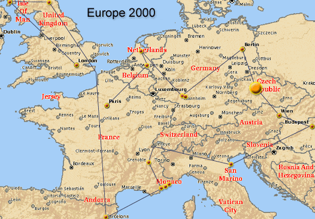

|

Prague (2000-06-26) Day 14:
| We
walked towards the center of the city and found the girls once again on
walkie talkies. These things are great! |
Prague (2000-06-27) Day 14:
| Ryan,
Julie, Debbie, and I are drunk in Prague at 2:33 AM. We're staying up until
sunrise with two chaps from Britain: Leigh, and Mark. Mighty fine time!
Prague is great, the dollar goes a rather long way, and the nights are
certainly exciting. We're at a disco right now, I just had a local shot
of Beravkahojajajwhatever... and we ran into these computers and thought
we'd do some Internet.
I started the night with Staropramen, an excellent
beer. It’s also interesting that the beer here is 10% - 12% alcohol. Some
of the other have had large shots of Absinth. It is quite true… one has
not properly experience Prague until one has wandered the labyrinth of
streets in a drunken fog. |
Prague (2000-06-28) Day 16:

We took a trip into the Petrinske Sady park. The
view is excellent from there. A tower (similar to the Eiffel, but smaller)
offers a breathtaking panorama. We also visited a hall of mirrors, played
hacky-sack with a few Czech chaps, and went to a monastery. For dinner we
had Mexican (the girls have been craving it), which was interesting. My
chicken fajitas weren’t really fajitas, but just the ingredients... very
tasty, just not in the normal form. We've been having a very fine time
with our money as well. The dollar is very strong here, a good meal costs
$5 if you splurge -- the equivalent of a $15 meal at home.
Prague (2000-06-29) Day 17:
Last full day here. We went up the TV tower (something
like 400 meters high, the viewing platform only at 100). Nice view. I strolled
around some northern areas which are very non-touristy. Back at the Bohemian
Bagel to do the internet thing. Yesterday's tour was mighty fine, the St
Vitus church inside the castle is simply astounding -- the best I've ever
seen. For dinner I finally had dumplings and pork roast, which was very
good. The girls went on a ghost tour at night, while Ryan and I suckled
on Bohemia Regent beer. Two litres filled me well, and we called it an
evening.
|